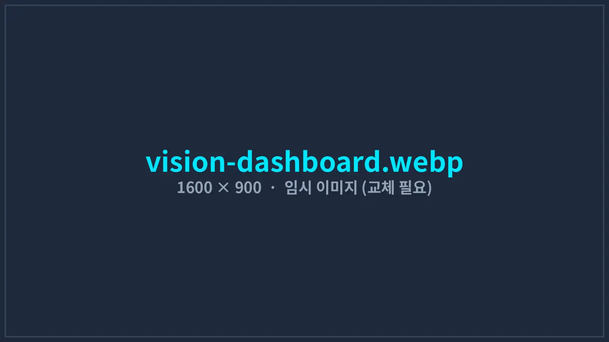
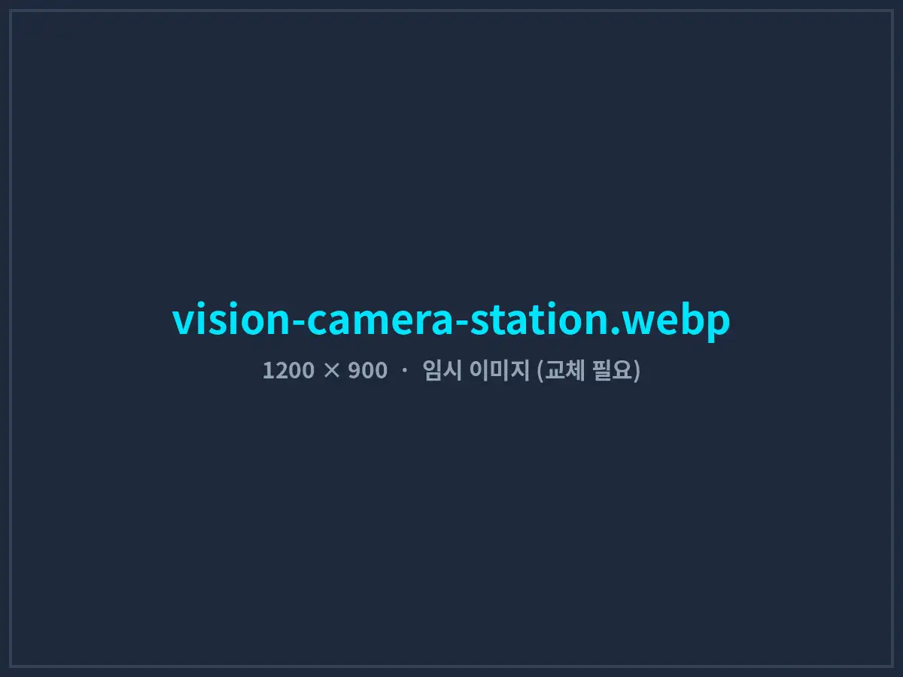
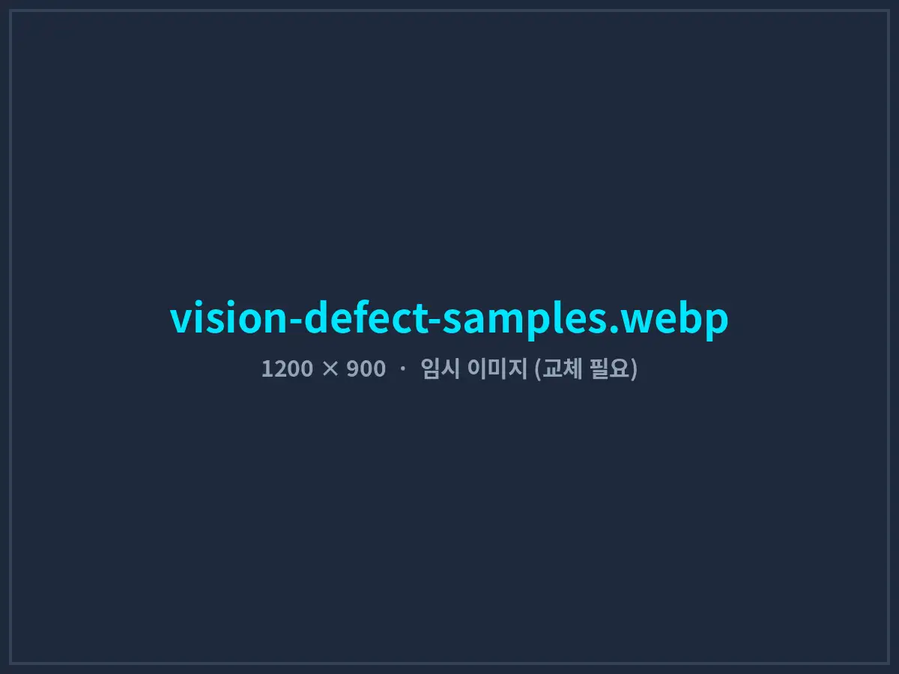

식품 포장 라인에 비전 AI 검사를 적용해 불량 검출부터 생산량 집계까지 자동화
분당 100개씩 지나가는 파우치를 사람 눈으로 검사하던 라인에 카메라와 딥러닝 검사를 붙였습니다. 불량은 자동으로 배출되고, 생산 수량과 불량 사진은 모두 DB에 쌓여 교대·일·월 단위 리포트로 바로 확인할 수 있습니다.
- 고객사
- D사 (소스·양념류 식품 제조사)
- 적용 라인
- 파우치 포장 라인 3개 · 2교대
- 구축 기간
- 2025.10 – 2026.02 (16주)
- 라인 속도
- 분당 90 – 110개
- 검사 항목
- 실링 · 이물 · 날짜 인쇄 · 형상
- 개발 환경
- C# .NET 8 · ONNX Runtime · SQL Server

01도입 배경: 눈으로 하는 검사의 한계
D사는 외식 프랜차이즈와 대형마트에 소스·양념 파우치를 납품하는 식품 제조사입니다. 포장 라인 3개에서 2교대로 하루 약 20만 개를 생산하는데, 실링 상태와 제조일자 인쇄를 라인당 2명이 눈으로 확인하고 있었습니다. 2교대 기준으로 검사에만 12명이 투입됐습니다.
분당 100개 속도에서 1개를 보는 시간은 0.6초 남짓입니다. 교대 후반으로 갈수록 검출률이 떨어졌고, 실링 불량으로 내용물이 새거나 날짜 인쇄가 빠진 제품이 납품처에서 발견되는 클레임이 월 평균 9건 발생했습니다. 생산 수량은 포장 박스 수로 거꾸로 계산해 ERP에 입력했기 때문에 실제 수량과 1~2%씩 차이가 났습니다.
- 검사 인력 부담라인당 2명 × 3개 라인 × 2교대 = 12명이 단순 육안 검사에 투입됐고, 인력 채용과 이직이 반복됐습니다.
- 납품처 클레임실링 불량, 이물 혼입, 날짜 인쇄 누락으로 월 평균 9건의 클레임과 반품이 발생했습니다.
- 부정확한 생산 실적박스 수 기준 역산으로 생산 수량 오차가 1~2% 발생해 재고와 원가 계산이 맞지 않았습니다.
- 원인 분석 불가불량이 언제, 어느 라인에서, 어떤 유형으로 나오는지 기록이 없어 설비 개선의 근거가 없었습니다.
02현장 설치 구성
기존 컨베이어를 멈추거나 교체하지 않고, 실링기 다음 구간에 검사 부스를 추가하는 방식으로 설치했습니다. 설치 공사는 라인별 주말 1일씩 진행했습니다.
| 구성품 | 사양 / 역할 | 수량 (라인당) |
|---|---|---|
| 산업용 카메라 | 5MP 글로벌 셔터, GigE — 파우치 윗면·아랫면 동시 촬영 | 2대 |
| 조명 | LED 바 조명 + 확산판 — 필름 반사 억제 | 2세트 |
| 엔코더 · 포토센서 | 컨베이어 이동 거리 측정, 제품 진입 감지 → 촬영 트리거 | 각 1개 |
| 리젝터 | 에어 블로우 방식 불량품 배출 (PLC 출력 연동) | 1대 |
| 검사용 산업용 PC | NVIDIA GPU 탑재, 딥러닝 추론 및 라인 제어 | 1대 |
| 현장 모니터 · 경광등 | 작업자용 실시간 화면, 연속 불량 시 경광등과 음성 경보 | 각 1개 |
03검사 · 카운팅 · 기록 흐름
- TRIGGER제품 진입 감지 · 촬영
- INSPECT딥러닝 불량 검출 · 날짜 판독
- ACT불량 자동 배출 · 경보
- COUNT양품 / 불량 수량 집계
- STOREDB 저장 · ERP 실적 전송
딥러닝 불량 검출
YOLO 계열 객체 검출 모델로 실링 주름·미실링, 실링부 내용물 끼임, 이물, 파우치 찢어짐을 찾습니다. 제품 1개당 추론 시간은 약 18ms로 라인 속도에 충분히 여유가 있습니다.
제조일자 인쇄 판독
날짜 인쇄 영역을 찾아 글자를 읽고, 당일 생산 기준 날짜와 일치하는지 비교합니다. 인쇄 누락, 번짐, 잘못된 날짜를 모두 불량으로 판정합니다.
정확한 생산량 카운팅
엔코더로 제품 위치를 추적해 같은 제품을 두 번 세거나 빠뜨리지 않습니다. 양품, 유형별 불량, 재검 수량을 분 단위로 집계합니다.
현장 모니터링 화면
라인별 실시간 영상, 시간대별 생산량 그래프, 불량 유형 순위, 최근 불량 사진 목록, 설비 알람을 한 화면에 보여줍니다. 작업자 화면은 큰 글씨와 색상으로 구성했습니다.
음성 경보
같은 유형의 불량이 연속 5개 발생하면 “2번 라인 실링 불량 연속 발생” 같은 음성 안내와 경광등으로 알립니다. 소음이 큰 현장에서도 화면을 보지 않고 바로 대응할 수 있습니다.
DB 저장 · 리포트
제품별 판정 결과, 불량 유형, 사진 경로, 시각을 SQL Server에 저장합니다. 교대·일·월 리포트를 자동으로 만들고, 생산 실적은 ERP가 읽는 형식으로 전송합니다.



04구축 과정
- 1–3주차
현장 조사 · 불량 기준 정의
품질팀과 함께 지난 1년 클레임 사례를 분류하고, 불량 유형 6가지와 판정 기준(한도 견본)을 사진으로 정리했습니다.
- 4–7주차
촬영 환경 구성 · 데이터 수집
1번 라인에 카메라와 조명을 임시 설치해 3주간 약 18,000장을 촬영했습니다. 이 중 불량 이미지 약 2,300장에 불량 위치를 표시해 학습 데이터를 만들었습니다.
- 8–11주차
모델 학습 · 1번 라인 병행 운영
검사 모델을 학습시킨 뒤 기존 육안 검사와 2주간 병행 운영했습니다. 과검출이 많던 필름 반사 문제는 조명 각도와 확산판을 바꿔 해결했습니다.
- 12–16주차
3개 라인 확대 · DB · ERP 연동
나머지 2개 라인에 설치하고 생산 실적 ERP 연동과 리포트를 완성했습니다. 조장 대상으로 모델 재학습용 불량 사진 등록 방법을 교육했습니다.
05도입 성과
전 라인 적용 후 3개월 운영 결과입니다. 검출률은 품질팀이 별도로 준비한 검증 샘플 5,000개(불량 600개 포함)로 측정했습니다.
※ 남은 4명은 배출된 불량품 재확인과 검사 부스 관리를 담당합니다. 과검출된 양품은 재검 후 라인에 다시 투입합니다.
가장 큰 변화는 불량이 ‘데이터’가 되었다는 점입니다. 리포트를 보니 실링 불량의 60% 이상이 교대 직후 30분 안에 몰려 있었습니다. 원인은 실링기 예열 부족이었고, 교대 전 예열 절차를 추가하자 실링 불량이 38% 줄었습니다.
06자주 묻는 질문
라인을 오래 멈춰야 하나요?
아닙니다. 검사 부스는 기존 컨베이어 위에 추가하는 방식이라 라인별 설치 공사는 하루면 충분합니다. 데이터 수집과 병행 운영 기간에도 라인은 평소처럼 가동됩니다.
학습 데이터가 없어도 시작할 수 있나요?
네. 대부분의 현장은 처음에 데이터가 없습니다. 카메라를 먼저 설치해 2~3주간 촬영하면서 불량 사진을 모으고, 품질팀과 함께 불량 위치를 표시해 학습 데이터를 만듭니다.
제품이 바뀌거나 새 불량 유형이 생기면요?
새 제품이나 불량 사진을 프로그램에 등록하면 재학습용 데이터로 모입니다. 일정 수량이 쌓이면 모델을 다시 학습시켜 원격으로 업데이트합니다. 유지보수 계약에 분기별 재학습이 포함됩니다.
식품 외 다른 제품도 가능한가요?
가능합니다. 부품 외관 검사, 조립 누락 확인, 라벨·바코드 판독, 수량 카운팅 등 카메라로 볼 수 있는 대부분의 검사에 적용할 수 있습니다. 샘플 제품을 보내주시면 촬영 테스트 후 가능 여부를 알려드립니다.
우리 라인에도 적용할 수 있을까요?
제품 사진과 라인 속도를 알려주시면 촬영 테스트로 검출 가능성부터 확인해 드립니다.